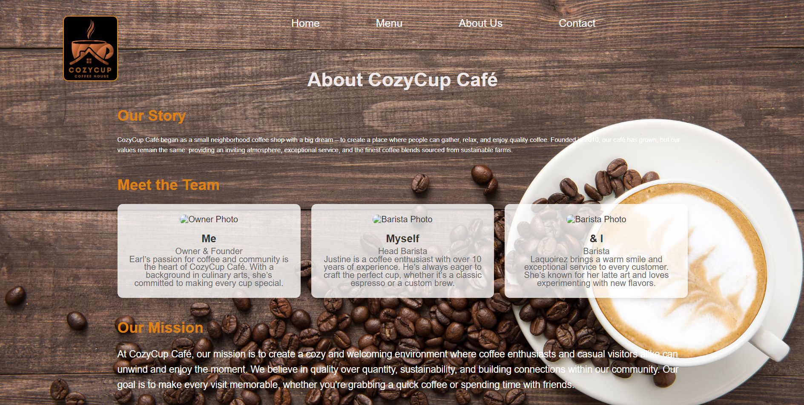

Bean City · Est. 2010
Our story
A neighborhood coffee shop where people gather for quality coffee, fresh baking, and a welcoming place to stay awhile.
- Founded
- 2010 — opened as a single-counter shop on Coffee St.
- Menu
- 50+ drinks — espresso classics, seasonal specials, and plant-based options.
- Team
- 3 core staff — the same faces behind the bar, year after year.
Our story

CozyCup Café began as a small neighborhood coffee shop with a big dream — to create a place where people can gather, relax, and enjoy quality coffee.
Founded in 2010, our café has grown, but our values remain the same: an inviting atmosphere, exceptional service, and the finest blends sourced from sustainable farms.
- Direct-trade relationships with growers
- In-house baking every morning
- Free Wi‑Fi and space to stay awhile
What we stand for
Three principles that guide every pour, pastry, and conversation at the bar.
-
Quality first
Small batches, dialed recipes, and ingredients we would serve to our own families.
-
Sustainability
Compostable cups, responsible sourcing, and partnerships with farms that care for the land.
-
Connection
A third place for regulars, remote workers, and anyone who needs five quiet minutes.
Meet the team
The baristas and owner who pour heart into every shift.
-
Earl Owner & Founder
Earl's passion for coffee and community is the heart of CozyCup Café. With a background in culinary arts, she's committed to making every cup special.
-
Justine Head Barista
A coffee enthusiast with over 10 years of experience. Always eager to craft the perfect cup, whether it's a classic espresso or a custom brew.
-
Laquoirez Barista
Brings a warm smile and exceptional service to every customer. Known for latte art and loves experimenting with new flavors.
Our mission
Quality over quantity, always.
We create a welcoming environment where coffee enthusiasts and casual visitors alike can unwind and enjoy the moment. Sustainability and real connections within our community — that's what every visit is for.